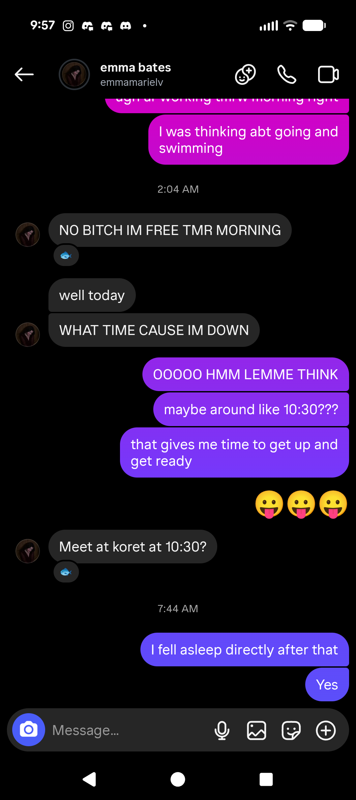
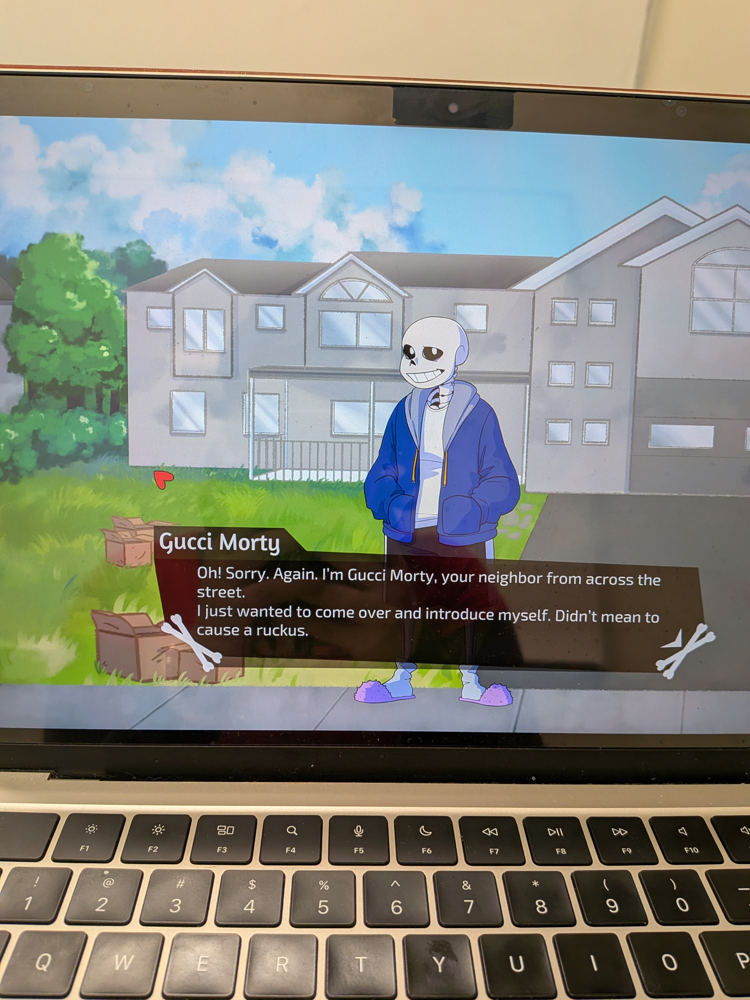
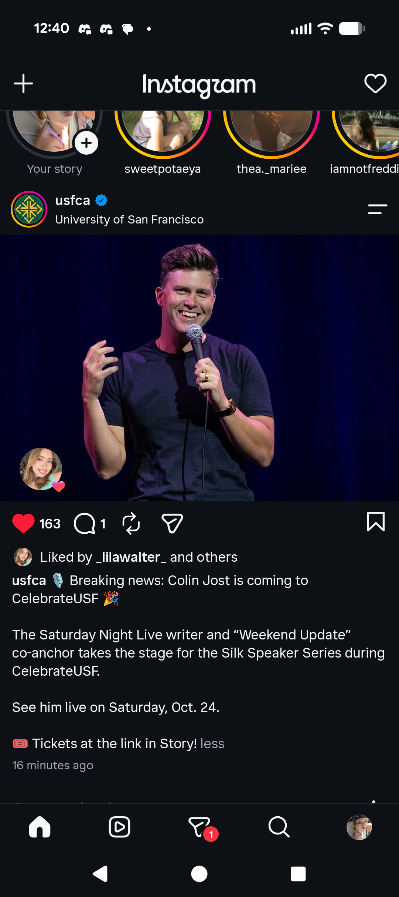
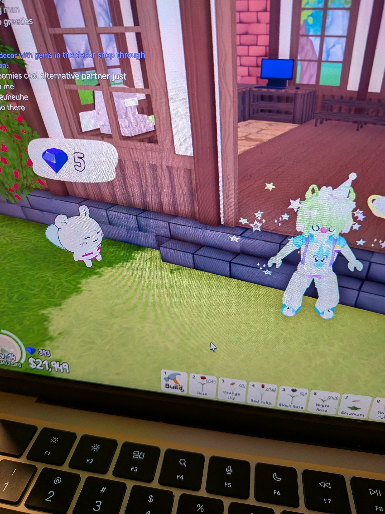
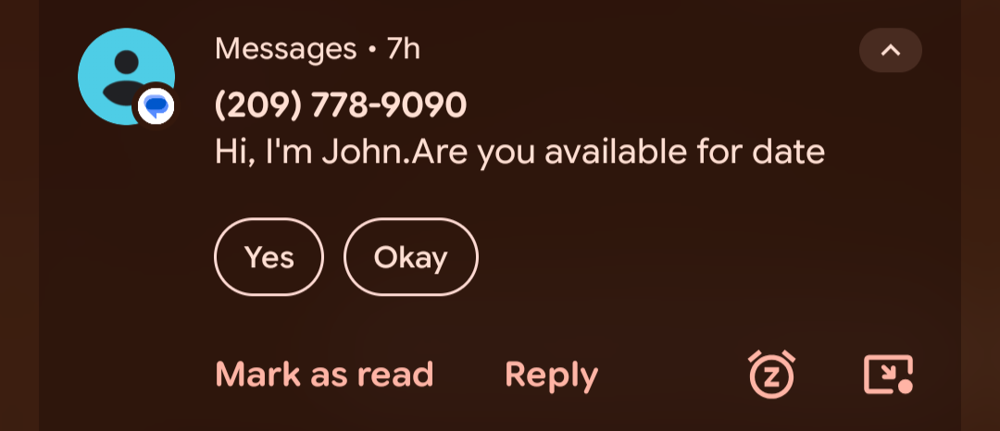
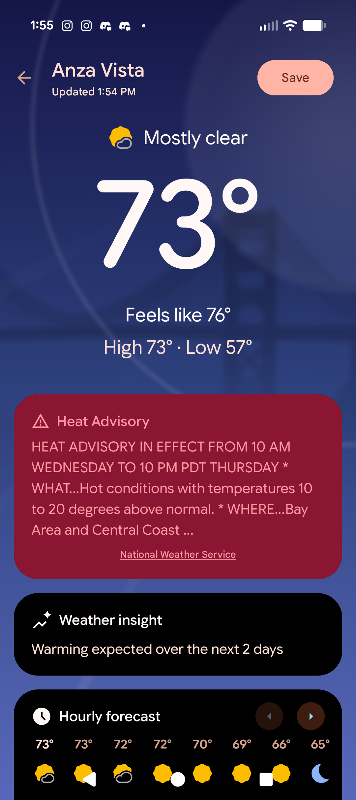
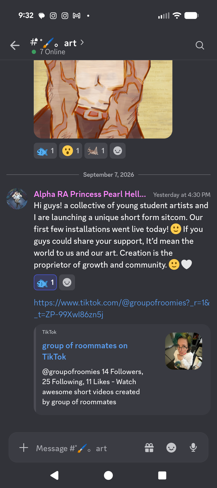

Hello earthlings!! ^_^
my name is Trix and this is
my day on earth as
a normal human!

I start my day by swimming
with my friend! Oh joy!
How I love swimming!

Next, I met my other earthling
friend Fiona in the library!
We played fun computer games :P

Then, I allowed myself some time on
the human invention "Instagram"...
It's very addictinh. A guy from the
Earthling show "SNL" is
coming to my school i guess!

I decided to hop on the game "Roblox".
They offer intere-dimensional cross-platform
playing so I like to use it to connect with my
Alien friends from home! .w.

I don't know who John is.
My name's Trix...
wrong number?

It's hotter than MARS out here!
Good thing humans have an app
to check the weather :3
More "Instagram" time...
this technology is dangerous.
I am enthralled.
ME AND EARTHLING ROOMMATES MADE GROUP "TIKTOK" ACCOUNT!
AND THAT ISN'T ONLY THE NOISE A CLOCK MAKES APPARENTLY!
also very addicting, almost as bad as the "Instagram"
Human music...I like it. Hehe!
Thank you to the "Spotify"

Friend Roommate Earthling Bella telling other
friends about "TikTok"!
So many of the new "followers"...
The "Discord" is very fun to talk with friends.
Me and Earth friends have tradition!
Every day, TWICE on the day, we go to this fun website!
We all make fish and send to each other! :D